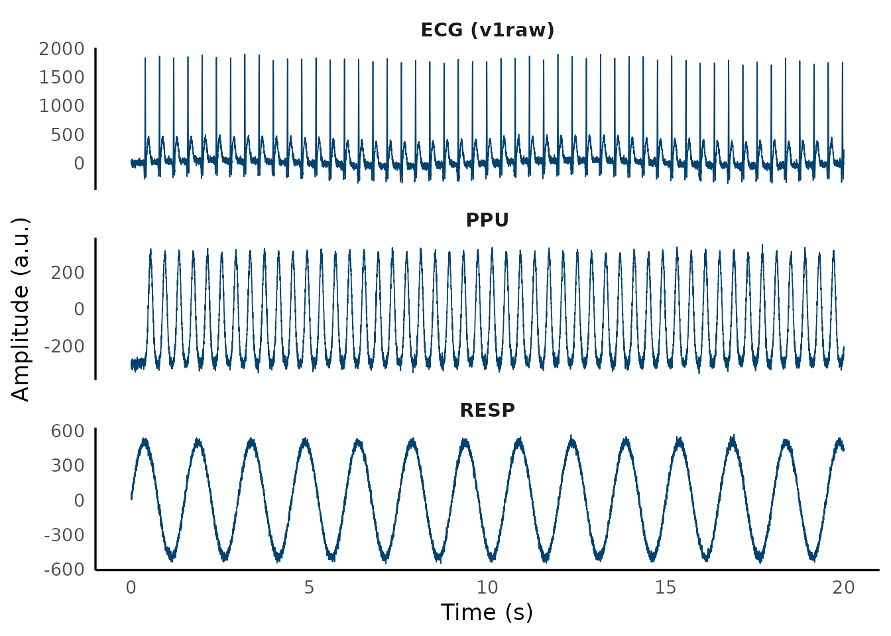
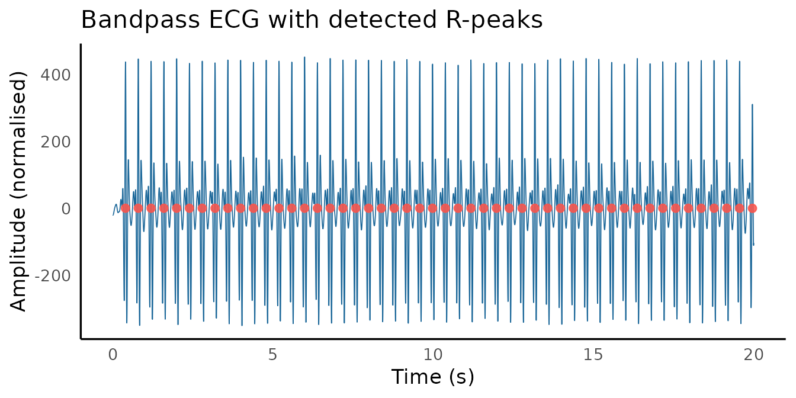
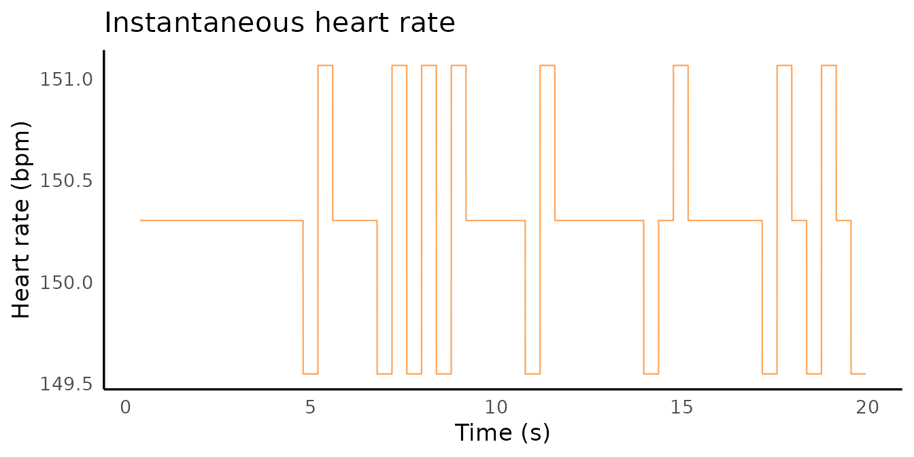

Philips MRI scanners record cardiac, respiratory, and motion signals
alongside the BOLD acquisition via the Physiological Monitoring Unit
(PMU). mrpheus can read these .log files, detect QRS
complexes with the Pan-Tompkins algorithm, and compute instantaneous
heart rate — producing cardiac regressors ready for RETROICOR or HRV
analysis.
Reading a Philips PMU log
read_philips_physlog() parses any Philips PMU
.log file and returns a mrpheus_physlog object
containing the signal matrix, event markers, and recording metadata.
path <- system.file("extdata", "example_physlog.log", package = "mrpheus")
rec <- read_philips_physlog(path)
rec
#>
#> ── mrpheus Philips PMU recording ───────────────────────────────────────────────
#> ℹ Path: /home/runner/work/_temp/Library/mrpheus/extdata/example_physlog.log
#> ℹ System: wBTU (496 Hz)
#> ℹ Channels: v1raw, v2raw, v1, v2, ppu, resp, gx, gy, gz, mark
#> ℹ Samples: 9920 (0.3 min)
#> ℹ Markers: 52 eventsThe system argument sets the hardware preset:
# Wireless VCG (Achieva/Ingenia dStream) — default
rec <- read_philips_physlog(path, system = "wBTU")
# Older wired ECG system (500 Hz)
rec <- read_philips_physlog(path, system = "wired")
# Site-specific sampling rate
rec <- read_philips_physlog(path, system = "custom", sfreq = 400)The resolved sampling frequency is always at
rec$HDR$sfreq so nothing downstream needs to hardcode
it.
Signal channels
ecg <- as.double(rec$C[, "v1raw"])
ppu <- as.double(rec$C[, "ppu"])
resp <- as.double(rec$C[, "resp"])The wBTU layout provides ten channels:
| Channel | Contents |
|---|---|
v1raw, v2raw
|
Raw VCG electrode voltages |
v1, v2
|
Processed VCG signals |
ppu |
Peripheral pulse unit (PPG, foot) |
resp |
Respiratory belt |
gx, gy, gz
|
3-axis accelerometer |
mark |
Bit-encoded event marker |

Event markers
rec$I$ScannerStart
#> [1] 496
rec$I$ScannerStop
#> [1] 9466
head(rec$I$VcgOnset)
#> [1] 198 396 594 792 990 1188QRS detection
detect_qrs() implements the Pan-Tompkins (1985)
algorithm and returns a mrpheus_qrs object.
qrs <- detect_qrs(ecg, fs = rec$HDR$sfreq)
qrs
#>
#> ── mrpheus QRS detection ───────────────────────────────────────────────────────
#> ℹ R-peaks detected: 50
#> ℹ Mean HR: 150 bpm
#> ℹ Filter delay: 37 samples (0.075 s)
#> ℹ Sampling rate: 496 HzR-peak indices are in qrs$qrs_i. Account for
qrs$delay if you need indices aligned to the raw
(pre-filter) ECG.

rr_ms <- diff(qrs$qrs_i) / rec$HDR$sfreq * 1000
cat("Mean RR :", round(mean(rr_ms)), "ms\n")
#> Mean RR : 399 ms
cat("SDNN :", round(sd(rr_ms)), "ms\n")
#> SDNN : 1 msPPU as an alternative
In neonates, PPU often gives a cleaner signal than the ECG
electrodes. detect_qrs() accepts any pulsatile channel:
qrs_ppu <- detect_qrs(as.double(rec$C[, "ppu"]), fs = rec$HDR$sfreq)Heart rate signal
compute_hr_signal() converts R-peak indices into a
sample-by-sample instantaneous HR trace (bpm). It reads fs
from the mrpheus_qrs object directly:
hr <- compute_hr_signal(qrs)
Epoch extraction
To extract the physiology aligned to the fMRI scan, use the scanner-stop marker. This is more reliable than the start marker because the exact recording onset varies but the stop is always clean:
sfreq <- rec$HDR$sfreq
enddelay <- 42L
tr <- 0.392
vols <- 47L
stopidx <- tail(rec$I$ScannerStop, 1L) - enddelay
startidx <- max(1L, stopidx - round(vols * tr * sfreq))
epoch <- rec$C[startidx:stopidx, ]
cat("Epoch:", nrow(epoch), "samples /", round(nrow(epoch) / sfreq, 1), "s\n")
#> Epoch: 9139 samples / 18.4 sRR intervals per TR
qrs_epoch <- detect_qrs(as.double(epoch[, "v1raw"]), fs = sfreq)
rr_t <- qrs_epoch$qrs_i[-1] / sfreq
rr_s <- diff(qrs_epoch$qrs_i) / sfreq
tr_times <- seq(0, vols * tr, by = tr)
rr_tr <- approx(rr_t, rr_s, xout = tr_times, method = "constant")$y
cat("RR per TR (first 5):", round(rr_tr[1:5] * 1000), "ms\n")
#> RR per TR (first 5): NA NA 399 399 399 msrr_tr is a length-vols vector ready for
RETROICOR phase computation or inclusion as a nuisance regressor in a
GLM.
Full pipeline
library(mrpheus)
rec <- read_philips_physlog("sub-01_ses-01_physlog.log")
sfreq <- rec$HDR$sfreq
stopidx <- tail(rec$I$ScannerStop, 1L) - 42L
startidx <- stopidx - round(2300L * 0.392 * sfreq)
epoch <- rec$C[startidx:stopidx, ]
qrs <- detect_qrs(as.double(epoch[, "v1raw"]), fs = sfreq)
hr <- compute_hr_signal(qrs)
rr_tr <- approx(
x = qrs$qrs_i[-1] / sfreq,
y = diff(qrs$qrs_i) / sfreq,
xout = seq(0, 2300 * 0.392, by = 0.392),
method = "constant"
)$yReferences
Pan J, Tompkins WJ. A real-time QRS detection algorithm. IEEE Trans Biomed Eng. 1985;32(3):230–236. https://doi.org/10.1109/TBME.1985.325532
Groot PFC. ReadPhilipsScanPhysLog (MATLAB). AMC Amsterdam. 2010.
Glover GH, Li TQ, Ress D. Image-based method for retrospective correction of physiological motion effects in fMRI: RETROICOR. Magn Reson Med. 2000;44(1):162–167.